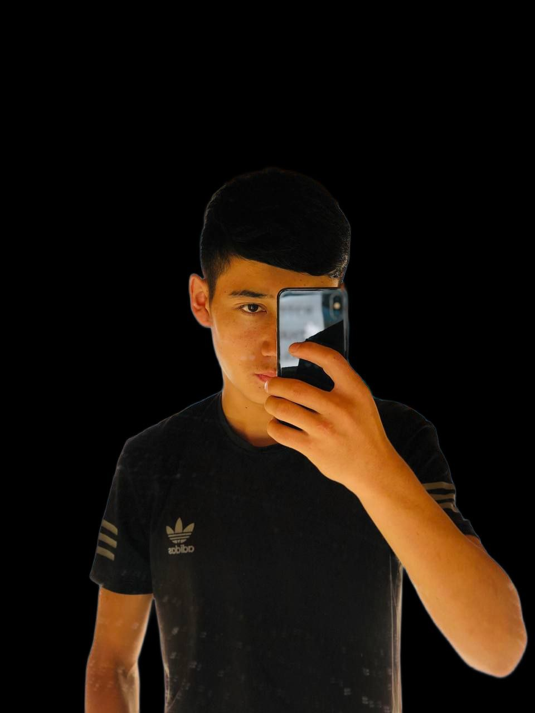

Hobbi

Tennis

Football
Music
В свободное время я люблю, играть тенис, играть футбол, и слушать музыку: Это меня успокаивает.
Biography
ФИО: Бердибеков Самат Маратбекович
ДР: 18.04.2004г
ТЕЛ: 0703783830
About Me
Привет меня зовут Самат мне 18 лет, я сам с Иссык-Куль, но в данный момент живу в городе Бишкек, я закончил 11 классов в городе Каракол а после школы решил поступить на курсы по it-програмирование и я посоветывался с друзьями и они предложили курс Makers